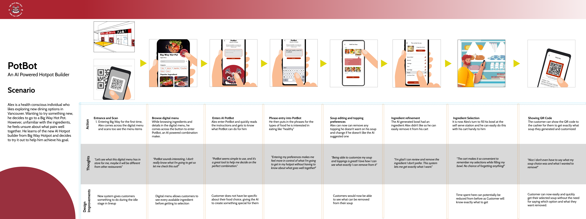

PotBot: Personalized AI Hot Pot Builder
Project Team
In this project, there was a total of four people involved:
- Myself as Project Lead and UX Strategist: Led ideation, conducted research, and guided the prototype development.
- Member 2: Prototype Collaborator and Ideation Support: Assisted in prototype development and provided support during ideation sessions.
- Member 3: Ideation Specialist and Research Coordinator: Played a key role in generating ideas and coordinated the research activities.
- Member 4: Communication Manager and Visual Design Specialist: Managed communication with the participant group and led visual design efforts for the project.
The Challenge
For my Interaction Design Class, we were assigned the task of finding a participant group to collaborate with (such as a restaurant, charity, shop, etc.) to devise and design a technological solution addressing a problem related to interaction design within the 13-week timeframe of the course. The objective was to analyze the interactions within the chosen group and create a technology solution for an area of their processes that could be improved. Through connections from one of the members of our group with a kitchen manager, we got to work with Big Way Hot Pot for this project. This presented a very interesting interaction problem, as Big Way Hotpot is known for its self-serve selection of ingredients, which is much different from its competitors.
To tackle this task, we employed the double diamond design approach, consisting of discovery, definition, development, and delivery phases. This structured methodology provided a clear and systematic design thinking path, enhancing our ability to address the complexities of the project.
Discovery Phase
After conducting preliminary research on the restaurant, we initiated our ethnography by interviewing the kitchen manager, our contact at Big Way Hot Pot. Additionally, we briefly engaged with a few customers to identify their pain points.
The key findings from this included:
- 1. Queue times can get quite long, and customers may not know when they can proceed to the selection of ingredients.
- 2. Newer customers struggle with ingredient and soup combinations.
- 3. Customers are unaware of the price of their pot until checkout.
User Personas and Journey Map
Based on the data we gathered from the ethnography, we created two user personas accompanied with their User Journey map. This strategic approach aimed to conceptualize potential interaction pain points, pinpointing precisely where our technology solution could be implemented.
In going through the journey of our user we narrowed down a few locations within the shop that we could implement some kind of solution to one of our focus points which were: at the lineup, at the waiting area outside, or at the checkout counter
Definition Phase
We began the definition phase by creating three concepts addressing identified interaction problems.
After receiving feedback on our three concepts from our contact at Big Way and engaging in group reflection, we determined that our reframed design focus would be to: Enhance the overall dining experience by providing ingredients guidance to customers who are not familiar with Big Way's unique hotpot.
In the final stage of the definition phase, we conducted a participatory workshop with members of the Big Way team. Our primary objectives were to uncover and identify user frustrations, explore the feasibility of design ideas, and generate design opportunities in response to customers' concerns. To facilitate the workshop, we had the members from Big Way complete a pre-workshop survey, engage in a spider diagram activity, and participate in a mind map exercise.
Workshop Findings:
- Detailed menu information can help customers make informed choices.
- Pre-set combos can be helpful for newer customers.
- A digital cart interface can help save customers’ selections.
Development Phase
So, from our workshop findings, we further refined our design focus to: Enhance the overall dining experience by providing different combos and ingredients guidance to customers who are not familiar with Big Way's unique hotpot.
From this design focus, we created two design concepts and detailed storyboards for them:
Our two concepts were an AI-powered combination generator and an AR-powered ingredient selection assistant designed to help users find items. Ultimately, we opted for the AI Pot Builder, believing it to be not only more practical but also more effective in addressing our interaction problem.
Delivery Phase
Our final concept, PotBot, emerged as our solution to address the challenges faced by new users in making choices at Big Way Hot Pot. This system allows customers to enter keywords such as "beef," "pork," "under $20," and "no seafood" to generate their custom bowls. Since many visit Big Way for their unique self-serving hot pot system, our final concept does not interfere with what they are known for while still helping newer customers find selections tailored to their taste.
By utilizing this user-friendly system, new customers can confidently and swiftly pick their desired ingredients without any hesitation. The AI-powered combination builder lessens the cognitive load of the decision-making process, ensuring an enjoyable and personalized hot pot experience for all customers at Big Way Hotpot.
Final Interactive Concept Mockup and Journey Map
PotBot Final Concept Flow 1

PotBot Final Concept Flow 2

PotBot User Journey Map
Outcome
Throughout this 13-week design experience, I gained valuable insights and knowledge, even though the final design may not have been implemented or used. The application of the double diamond design methodology was particularly beneficial, providing a structured path for design thinking. I am grateful for the opportunity to utilize this framework, as it not only enhanced my understanding of the design process but also allowed for meaningful learning and growth.